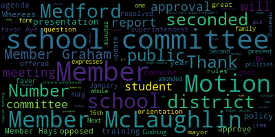

AI-generated transcript of 2.7.2022 - Regular School Committee Meeting
English | español | português | 中国人 | kreyol ayisyen | tiếng việt | ខ្មែរ | русский | عربي | 한국인
Back to all transcripts
[Unidentified]: Member Graham? Here. Member Hays is online. She probably should say here, so is she unmuted? Yeah.
[Lungo-Koehn]: Ms. Hayes? Member Hays?
[Ruseau]: Here. Oh. Member Kreatz? Member Kreatz?
[Unidentified]: Here.
[Ruseau]: Member McLaughlin.
[Lungo-Koehn]: Here.
[Ruseau]: Member Mustone.
[Lungo-Koehn]: Here.
[Ruseau]: Member Ruseau here. Mayor Landau here.
[Lungo-Koehn]: Present. Seven present. Zero absent. Do we have any student representatives on the call? Not tonight.
[Ruseau]: Not tonight. Thank you.
[Lungo-Koehn]: We all may rise to salute the flag. We have the consent agenda, which is approval of bills, payrolls, committee of the whole meeting minutes from January 24th, 2022, regular school committee meeting minutes, January 24th, 2022, committee of the whole meeting minutes, February 3rd, 2022.
[Kreatz]: I just had one thing to mention. I just wanted to say I sent an email today to Susie with three small updates, just spelling of some names, you know, members names and missing one word in one of the motions. So, but a motion to second to accept with those amendments.
[Lungo-Koehn]: Motion for approval as amended by, approval by Member McLaughlin as amended by Member Kreatz, seconded by Member Kreatz. All those in favor? All those opposed?
[Ruseau]: Mayor? I'm not actually sure procedurally if we're supposed to ask Member Hays for her vote. I don't know.
[Lungo-Koehn]: I think she should stay unmuted and respond.
[Ruseau]: Oh, thank you.
[Lungo-Koehn]: If it's real time. Member Hays, are you in favor of approving the consent agenda? Yes. 7-0. We have number four, good of the order. Good of the order is a time set aside for members to offer comments or observations without formal motions about society and its work. Process for motions not abided. For example, 11-15 budget schedule and 12-6 school committee tour of locker rooms. Presented by member McLaughlin.
[McLaughlin]: Thank you, Mayor. The good of the order is a line item that occurs monthly for the school committee to review our work and how we're working together and collaborating. And one of the things that I was noticing was two motions, and I didn't go that far back, but I did notice two motions that have not been abided. So these were motions that were approved. by the committee as a whole on this floor. So the 11-15 budget schedule motion and the 12-6 tour of locker rooms and the budget schedule motion was Whereas Medford Public Schools has historically conducted the annual budgeting process commencing in April and concluding in June, whereas there's a substantive increase in COVID-related funding for FY 2022, whereas hiring practices in many districts are finalized by March, April, albeit resolved, the Medford Public Schools budgeting process commenced in January and concluded in March, with budget recommendations presented to the city council in March. So that, again, that was approved by the body. And then there was also a 12-6 school committee tour of locker rooms, the female and male locker rooms, or I guess that aren't gender specific, but the locker rooms for touring in December. And so we had a presentation by, the finance director, assistant superintendent Dave Murphy about ideas for the budget and how we would approach the budget, but that did not address the motion that had been passed and also the tour of the locker room. So I'm asking my colleagues sort of how do we proceed if we have motions that have been passed by the body, but have not been acted on or had partially been acted on.
[Lungo-Koehn]: Member McLaughlin, maybe start by emailing the superintendent and whatever department head would be responsible for the report just to get an update. And then I think this is a good way to send a reminder. I don't know if anybody else has ideas. Member Graham.
[Graham]: While we haven't finished going through the rules, I do think there are some meaningful things happening in the rules document that will make it easier and more transparent to track the things that we are passing. So the new numbering system, some of the changes to the way the agenda is being presented, some of the many reasons why I'm in favor of having rules that are documented. And I do think, you know, those things are important and would ask the superintendent that if the dates don't work, that you just kindly let us know and that we can figure out a better path forward. But I am also in support of making sure that there is compliance with the motions passed on the floor.
[McLaughlin]: May I? Member McLaughlin? Yeah, I just wanted to be clear that this is not a reflection on the superintendent. I actually feel like it's our body as a school committee as a whole and us sort of working together to ensure, and I do agree with Member Graham, that the numbering of the motions and having a list of motions that have been approved will help with this process. But I guess I'm asking sort of what the procedure is, and it sounds like I'm hearing from the chair, procedurally to email the superintendent if there's motions that have happened that have not been moved forward, but I would suspect that we also need to email or let our body know. So I'm looking for a process as to what that looks like so that we can let the body know if there are items that haven't been moved forward that have been voted on. as a whole, not just the superintendent. So that's the question I'm asking procedurally. And we don't have this from what I can see in any of the policies that we've had set or any of the rule proposals. So I guess I'm asking what the body thinks should be done or how can we have a procedure? So if then procedure, if this happens, then this happens. you know, if a motion has been passed and has not happened by the date that it was due, then, you know, an email gets sent to central administration and to school committee, you know, by the member, I suppose, who made the motion. I don't know if that's agreeable to the committee as a whole, but putting that out there.
[Kreatz]: Yes. What about if on the agenda, it was added, I know we have added sometimes old items, you know, unresolved. So I'm thinking, you know, if the motions were expressed and the date was listed, it could just be carried at the end of the agenda to be trapped, you know, for the outstanding motions. That might be a possibility. That's an option.
[McLaughlin]: Yeah, I think that could be really helpful just because for everybody. I mean, I think we're all busy and things slip by, so that could be good. I mean, I think the list could potentially get long. So I'm willing to try that if folks are willing to try that and see how that goes. So then we're all on top of the dates and the due dates, if that works with my colleagues.
[Lungo-Koehn]: Maybe we should just ask the administration if that is a good idea. I know it's a lot of reports, but.
[Edouard-Vincent]: I had originally liked the email, the superintendent and the body, because I just remember previous agendas where we had a running list and it like went on to a second page and it ended up being very lengthy. I think now with the new numbering system, to be able to keep track of is, 2022 14, you know, submitted, whatever, like the numbers, I think. I think that'll allow us to do it. So, I mean, right now the agenda is pretty, it's pretty full and we still have reports requested also on the agenda. Right now we currently don't have that. So, I think with the new numbering system, it'll allow us to, be able to try to address the motions. And if we realize that we're going to be behind schedule, then to email the entire, if you don't email me first for me to be able to email all of you and say, we're going to be behind on a particular motion that, you know, we're going to miss a deadline, but we'll get it done as soon as possible.
[McLaughlin]: Okay.
[Lungo-Koehn]: Thank you, mayor.
[Graham]: I think one of the things about the numbering system that I really am looking forward to is, in fact, that anything that is undisposed of remains on the agenda. I don't actually care how long it gets. I think it's very easy to keep track of what is undisposed of at City Council because they sit on the agenda until they are disposed of. So I am in favor of that. It brings a level of transparency to the conversation. It makes it top of mind, and it doesn't rely on individual members remembering what it is that they're supposed to be tracking themselves for seeing things all the way to the end. Things move really fast, and I would be a proponent of all of that stuff remaining on the agenda until it's disposed of.
[Ruseau]: Thank you. I also agree the long agenda is fine and looking at the last agenda of the Worcester school committee it's 184 pages long. So I think a little context on how big an agenda can be is important. They don't go through all of it, of course. Could you just speak up a little bit, Member Ruseau? Sorry. Sorry. I was just saying, I'm looking at the last agenda for the Worcester School Committee. It's 184 pages long. So I too am in favor of everything that is not disposed of remains in a section, but I think that we also have to acknowledge that we can't make a rule or make a motion as part of good of the order.
[McLaughlin]: Yes, I think that sounds good. As member Ruseau was saying, we can't do a motion under the good of the order, but it sounds like there's some conversation around this. And I think it makes sense to have it tracked as well, just as a reminder for us. And again, I think it can get long, but at least then we'll have an idea of what's moved forward and what hasn't. I'm okay with this item if you want to move forward, Mayor, and if we feel that there needs to be a motion to have this on the agenda, we can certainly put that on the agenda for next session, but hopefully that, you know, we don't need to do that.
[Lungo-Koehn]: Okay, sounds great. Thank you.
[McLaughlin]: Thank you.
[Lungo-Koehn]: Number five, reports of subcommittee, which I don't believe there are any. Number six is reports of superintendent. First up is superintendent's updates and comments. Dr. Marice Edouard-Vincent, superintendent.
[Unidentified]: Good evening.
[Edouard-Vincent]: So last week, unfortunately, malignant weather disrupted the school week and we needed to call two days last week. I want to send our apologies to our Mustang families whose students travel to out-of-district placements for the lack of communication on the first of these two days. When Medford calls a snow day, all Medford transportation vehicles are canceled. Therefore, we are unable to transport our out-of-district students to their facilities in other districts that may not have called off school. I am thankful for our collaboration with Medford CPAC, who had alerted us about this communication omission. I sincerely apologize to our out-of-district families who are not included in last week's no school announcement. Please know that we have fixed the communication glitch, and we'll be sure to notify out-of-district families of all snow days in the future. I am pleased to announce that two of our Medford Vocational Technical High School students, biotech students, Jessica Rehick and Ariana Feliz, have been accepted to the prestigious BioBuilder Apprenticeship Challenge, which will expose them to state-of-the-art concepts and hands-on training in synthetic biology. The training will take place after school three times a week at biobuilder labs. The students will be able to spend time learning in a state-of-the-art research lab, assisting with molecular biology experiments, and analyzing data. They'll also have the opportunity to learn lab math and bioengineering principles, as well as develop professional skills. The students will work in teams to prepare a scientific poster for a networking event that is attended by life science professionals. Once the students complete the apprenticeship challenge, they'll each receive a certificate and a small stipend at the graduation ceremony on May 12th of 2022. Often, graduates of this challenge have been offered paid summer institutes, internships at local companies. Congratulations to Jessica and Arianna, their teacher, Mr. Russo, and science director, Mr. Sealy. A footnote, one of our Mustang 2020 graduates, Rachel Smiles, was a bio-builder apprentice and now has a full-time position at Indigo Agriculture. Camp Mustang is completely filled now for February vacation. I'm excited that close to 300 students have the opportunity to learn and grow during this program. Again, registration is officially closed. In this Olympic year, programs like this reflect our goals that we can equate with the Olympic model. Faster, higher, stronger, together for all of our mistakes. The Andrews Middle School CCSR program seeks donations for the Malden Warming Center, a collaborative service that provides a safe, warm place for those experiencing homelessness during the winter months. There was a donation box in the Andrews Middle School lobby for shoes, sneakers, hand liners, small sturdy plates, paper plates, and bowls, hair elastics, men's sweatpants, and gif to go, individual peanut butter cups, to name a few. Also, due to our COVID-19 restrictions, the Medford Family Network's annual Valentine's Day ice cream social fundraiser could not be held in person again this year. Therefore, the friends of Medford Family Network have placed the fundraiser online. Some of the waffle items include Valentine cookie and ice cream kits, gift cards to Semolina and Collette's Bakery, spa gift cards, a photo shoot, and sensory exploration kits to name a few. Interested parties should go to the school blog for the link by midnight tonight. Raffles will be drawn Wednesday and pickup or delivery is Friday. Additionally, the Medford Family Network is presenting in English for speakers of other languages program, Tuesday and Thursday mornings, beginning March 1st in person at the Medford Family Network Center. Anyone interested must sign up by this Friday, February 11th. Please contact Marie Cassidy at 71393-2106. Makkah Bhutia Day will be celebrated on February 16th, the date of the full moon in the third lunar month. Makkah Bhutia Day is a Buddhist holiday observed to commemorate the meeting of Buddha and his first 1,200 disciples. Makkah means month, and Bhutia means prayer. On this day, Buddhists go to the temple to perform merit-making activities, as well as meditate and listen to teachings. To all of our Buddhist families and neighbors, I wish you a peaceful Malka Bucha Day. A few upcoming events for this week. Tomorrow evening, there is Building Bridges to Kindergarten from 6.30 to 7.30 p.m. Building Bridges to Kindergarten will be online by Zoom only, so you can go on our website and look for the Zoom link. On Wednesday, February 9th, Medford CPAC meeting presents language-based learning disability accommodations and intervention. That will be taking place on Zoom as well from 6 to 8 p.m. on Wednesday, February 9th. On Saturday, February 12th, CCSR and friends of the Medford Public Library have joined together to offer our teachers or librarians books for $5 at the Cambridge Savings Bank in Arlington. Sign-ups are required, so you need to reach out to Rebecca Siegel at rsiegel22 at medford.k12.ma.us. Also this Saturday at 10 o'clock in the morning, Spotlight is hosting the Spotlight Variety Show. The Spotlight Variety Show is hosting a sensory-friendly event. That means there will be extra lighting, open doors, reduced volume, and students can bring technology. It's a technology-friendly environment. It's a one-hour performance. This Saturday at 10 a.m., tickets are $10 per person. And lastly, on Wednesday, February 16th, the Asian Club will be hosting a lion dance in honor of Chinese Lunar New Year in the Medford High School gym. And more information to come.
[Unidentified]: Thank you.
[Lungo-Koehn]: Thank you, Dr. Edward-Vincent. Number two, we have a COVID update by Assistant Superintendent of Finance and Operations, Mr. David Murphy. and Miss Avery Hines, who's the director of health services. They will report on operational updates and pending COVID shifts in the Medford public school. Miss Hines is on Zoom. Mr. Murphy is present. Just got to get your microphone turned on.
[Murphy]: Thank you, mayor. As the mayor said, Miss Hines is joining us remotely and would be happy to answer any questions that you might have. There's one table that I'd ask Dr. Cushing to put up on your screen now. If we could do just a full screen version of that so we can see it. So this is our grade level vaccination rate as of today. Similar to when we've updated you on our vaccination rates previously, these rates fluctuate daily. And in all likelihood do not represent a 100% accurate assessment of our vaccination rates because there are instances in which students become vaccinated through outside practitioners and numbers have not been updated in the state system. But it does represent, we think, something that's pretty close. to our accurate numbers. And also, this is at a minimum, it's the floor, because this is everything that's in the state's databank as well at database rather, as well as it reflects all the vaccinations that our staff has done through our both weekly vaccination clinics that we've run as well. And what it doesn't represent yet is our in-school vaccination clinics that we'll be talking a little bit about this evening. So as you can see, these numbers have gone up as we expected that they would, and Ms. Hines could speak to how this potentially, from a public health perspective, where we think we are sort of as a community, but certainly these are encouraging numbers. Not surprisingly, the students that have been eligible for a longer period of time have a higher vaccination rate. We have some concerns at both the kindergarten level and particularly at the sixth grade level where we're seeing a dip. And that's something that we'll be doubling down on over the course of the coming weeks. But generally speaking, we feel positive about these numbers. I'm good with the slide. Thank you, Dr. Pershing. As I mentioned, we are, as we've talked about in the last couple of school committee meetings, and as we've communicated in a variety of ways to students, staff, and families in recent weeks, like much of society, we are transitioning from an emphasis on testing to an emphasis on vaccination. We've done that in a variety of ways that we think distinguish Medford Public Schools from other districts. We've done it in close partnership with the City of Medford Board of Health and now we are sort of in the belt and suspenders phase as we have both our surveillance testing program, which will run through the remainder of this month, as well as the rapid at-home test distribution made possible through the DESE's procurement of those rapid antigen tests. So our surveillance testing is up right now, as we've previously communicated. This week does mark the first week in which the onus for contact tracing is on, by and the individual families when there is a positive case. Thankfully, over the past couple of weeks we've seen a steady and consistent decline in the rate of positivity, which we're obviously happy about. We, as of right now, pending a continuous review of that data, will retire our surveillance testing program in the first week of March, so the week of February 28th. The rapid tests have been deployed as of today to staff who have, all Medford Public Schools staff are eligible to receive these tests just by filling out a consent form. This is a separate consent form than the ones that are on file for our surveillance testing program, and students are sending in their their consent forms as well. And distribution of their rapid tests will begin in the latter part of this week. So just last, just a couple of reminders. Our student athletes who have had mandatory testing up until this point, they will have mandatory participation in the rapid testing program. And that will start in the week of February vacation. So for those participating in the winter athletic season, there will be a responsibility of the student athletes to pick up those rapid tests and participate in that program. But the final week as of now for surveillance testing will be that week after February vacation. improve positivity. And finally, lastly, our in-school vaccination clinics, which are scheduled for next week at all elementary and middle schools, have approximately 100 students signed up to receive their vaccination, which is another number that we're very happy about. And we're going to do another round of promotion communications-wise tomorrow to hopefully push that number up a little bit more. So with that, I'm happy to take your questions. I'm also happy to sit down.
[Unidentified]: Great. Thank you for the update.
[Lungo-Koehn]: Number three, we have suspension discipline report, assistant superintendent of secondary education, Dr. Peter J. Cushing will report on the status of discipline and detail a demographic breakdown of the district. Dr. Cushing.
[Peter Cushing]: Thank you, Madam Mayor. Good evening, members of the school committee. Just want to provide a verbal update to the report that you have in your packet. So the original motion asked for the planning and implementation that we had done to address the concerns of suspension and to reduce significantly and dramatically the number of suspensions that our students may have been subject to. So what we did was first last year in March of 2021, we had a seminar for all district administrators that was titled Properly Investigating Claims of Bullying and Harassment. This was held over Zoom on March 31st. and it was to make sure that every single district and school administrator had the same understanding of how an investigation should be conducted. While this was done primarily for bullying and harassment, it really was for any situation that may come up to make sure that the due process rights of students prior to discipline being imposed was undertaken. So they were trained in interview methods, understanding and following through on due process, as I said, and maintaining confidentiality. Second, Ms. Galussi expanded responsive classroom to all elementary schools in the district. Elementary staff have participated in the training for the implementation of this program. Third action that we've done is a train the trainer model for two professional development modules. The first is understanding and addressing implicit unconscious bias in our schools and social emotional learning in the classroom. The former had 21 participants. It was capped at 20, but we squeezed one in. And then the other had about 17 participants. The first was a two day training that we have now delivered to every single staff member in the district. with the exception of our special education staff as they were engaged in another valuable professional development that day. And we will be following up further on the implicit bias. We also are facing, are deploying the social emotional learning in the classroom presently as an optional professional development being offered to staff on the three optional professional development days. Challenges are just a limited amount of professional development time with competing interests. And, you know, to think about deploying new curriculums, deploying various things that we have, as well as the continuing pandemic and people's bandwidth through these very challenging times, as I'm sure you've seen in the news media lately about the stress that teachers are under. Future plans include the introduction of a restorative justice pilot that has already been done at the Andrews, and we have a plan in place to move forward with the pilot at both the McGlynn Middle School and Medford High School. and for us to offer that there as well, while a plan to continue at the Andrews is also in place. We're also currently reviewing the responsive classroom model to see if that's something that we should carry forward in the middle school. They have a middle school offering. If all of our students are being offered this across the district at the elementary level, then it would seem to be a natural progression. I say seem, because we're just starting to investigate it. I have a meeting with Ms. Galussi and a representative later this week to start that conversation. But if our students are all being trained as they come up through, it would be a good natural progression for our teachers to understand where they're coming from and continue with the program. And then while not in the report, we're also examining, this is something that was suggested by students in the many student seminar groups that we had. Peer mediation had a conversation with a peer mediation training company that specializes in school peer mediation today. And also looking at the climate and culture survey that was suggested by this group on December 6th. You have the specific numbers focused on secondary and happy to answer any questions you may have at this time.
[McLaughlin]: Member McLaughlin. Thank you. Thank you Dr. Cushing for this report. I had just a couple of questions for the professional development training specific to the bullying and harassment. I know that you and I have met on this a number of times as well. Is there going to be any training for families and community caregivers, I think you had mentioned that there might be something like that.
[Peter Cushing]: It will be, and we're trying to plan that and get that off the ground so that it will be an annual training offered at a district level for parents to come in to understand, number one, bullying versus conflict, and also the processes of bullying. I also know that the bullying policy has been referred back to the Rules, Policy, and Equity Committee, And we'd be happy to discuss further our plans there.
[McLaughlin]: Great, thank you. And then we had also talked about a flow chart. And I know that you and the Director of Pupil Services, Ms. Bowen, were working on something that was a visual aid, at least for families in the meantime, while, or families and caregivers in the meantime, while rules subcommittee is working on some of the language. Is that available or can that be made available?
[Peter Cushing]: It can be made available. Once again, though, it hasn't been officially adopted as part of the policy. So happy to share that out as a draft. but would want to make sure that anything is, and anything as sensitive as the bullying policy is, would like to make sure that it's reviewed and approved by the committee prior to widespread distribution, but I can also understand the perspective.
[McLaughlin]: That would be great if we could, sorry, Mayor. That would be great if we could have a draft of that, if we could see that maybe for the next one, if it's already done. Thank you. And then for the, I'm sorry, the restorative justice pilot that I know is going to be expanding from the Andrews to the McGlynn, you were saying, is that something that's observable? Like, what does that look like? And, you know, can a school committee member observe or somebody else observe what actually Is there a curriculum attached?
[Peter Cushing]: There's a very specific curriculum. There are several companies, and I know Suffolk University does some really great work in this. Great. Suffolk University was not involved at the Andrews. It was another organization. Just want to be clear about that. What I think that the trainings could be viewed, I think that possibly the, not possibly, I think that the training materials could be viewed, but when restorative justice- Yeah, the process, yeah. Yeah, we don't want the- No. An outsider coming in to observe a restorative circle would really disrupt the process and the flow.
[McLaughlin]: Right.
[Peter Cushing]: At least in my experience.
[McLaughlin]: So if we want that information, we can reach out to you regarding, okay, great.
[Peter Cushing]: I also have in my office, a 431 page book called Circle Forward. And I forget who published it, but it's a spiral bound book that if you would like to come and take a look, feel free.
[McLaughlin]: There's a great documentary too, called The Circle, all about restorative justice and something that was done in Boston Public Schools. So happy to share that with you too. That would be one?
[Unidentified]: Yeah.
[McLaughlin]: Great. Thank you. And then lastly, the data on the discipline. Um, I know that we didn't ask for it, but I'm sure that it's being collected, um, demographics on this data.
[Peter Cushing]: Yes, it is. It was not, I, I tried to stick as close to the resolution as possible. Um, but yes, I mean, we can definitely provide demographics.
[McLaughlin]: That would be great. And then can we also include elementary data? Cause I understand there have been some suspensions at the elementary level.
[Peter Cushing]: So I'd invite Ms. Galussi to come up or if you just want me to. So we deliberately did not include data at the elementary level because there are two suspensions across the four schools and really giving any more data in a public meeting would not respect the privacy and the sensitivity of those students and families involved. And so through conversations with Ms. Galussi, we really felt that we needed to really provide you the data, but also to make sure that our students' privacy as they restore and they grow is protected.
[McLaughlin]: And that data definitely, according to Desi, as well as the case for special education, if the children are identifiable by the numbers because of the low numbers, we don't include that. So say under five or something like that, that makes sense. But could there be a process by which school committee is made aware of elementary school suspensions, which obviously are concerning, and especially with some of our very young students, it seems to me that we should know if that's the case, because it just seems that there's got to be some knowledge of that, especially because it is rare, but some understanding without knowing, obviously, who the students are at the school or anything like that. But for example, if a first grader is suspended, I think the school committee should know.
[Peter Cushing]: So I don't actually know that that should be the case, to be honest, with all due respect. The new laws and regulations that were passed a few years ago require that any student under third grade, third grade or below, the superintendent needs to be immediately aware. However, I think reporting to school committee on each individual suspension as it occurs would not necessarily be in the greatest interest or good of the students. With all due respect, but I want to give Ms. Galussi, I apologize.
[Galusi]: I actually was going to say the same thing, but Dr. Cushing said it beautifully. I just want you to be also mindful that when situations like this do occur, we are notified and so the conversation then happens between myself and oftentimes Joan Bowen if it is a student as you have described that would be on an IEP even today. Bowen, Director of Approval Services, and myself had a meeting very similar at a school about this. So it's definitely a conversation and things are definitely addressed between myself and the principal or the team. Documentation is reviewed. But I think that it is a very, as we're explaining to you here, I mean, it is February and out of four schools, we only have to across the schools. So it's very infrequent because other supports are in place at the schools. And so conversations are happening around the need for a suspension if that comes up. And a lot of them are really not the suspensions necessarily the way that you may be thinking. Some of them are more therapeutic in nature. And so I think the situations are very sensitive and confidential and just handled at the school level with the support team that's in place.
[McLaughlin]: Thank you. Yeah, I think my primary concern, and I can appreciate the privacy issue for sure, but my primary concern is obviously, you know, if the district is suspending first or second graders or kindergartners, I think that sends a message as well. And I think it's really important that we're focused obviously on the social emotional learning and responsive classroom and all of those things. So I don't obviously need to know the circumstances. I don't wanna know the circumstances, but I do think that it's valuable for, and I hear you saying that, The school committee doesn't need to know because there are two incidents, for example, and I would agree with that. But I do think if we get a call from a constituent or a family member or here in the community or other people here in the community, you know that 7, 8, 5, year-old is being suspended in our school district. I think it really sends a message to our community as well. And so I don't know what the answer is to that, but I'm really hoping that we see zero at the elementary level, just because it seems like, you know, they're children and we should be really looking at restorative justice at the elementary level, if that's the case. Thank you.
[Lungo-Koehn]: Thank you. Member Hays.
[Hays]: Hi, yes, thank you. I was curious about some of the classroom programs for social-emotional learning and wondering what kind of ongoing support there is for teachers as they try to implement some of these after the initial professional development.
[Peter Cushing]: So the ongoing support would be any one of the trainers would be available to come and work with the teachers. Ms. Schulman and her staff, Councilors, building administrators, as well as building leaders, principals, assistant principals would be available to come in, conduct observations of student behavior. that would not be observations of the teacher per se, but could be observations of student behavior, student interactions, and also providing other research and evidence-based resources that would provide assistance.
[Hays]: Is that built in, or does the teacher have to come and ask for that if they want it?
[Peter Cushing]: So the teacher would have to come and ask and say, hey, I need this assistance, or what more could you do to help me out with this?
[Hays]: Okay, thank you.
[Peter Cushing]: Thank you.
[Graham]: Member Graham. On the report that you provided, can you tell us what the difference between a detention and a one-hour detention and a two-hour detention and a three-hour detention is? I was with you until the last one, two, three, and then just detention. What does that mean?
[Peter Cushing]: So the report actually shows some work that we have to do in our student information management system to clean up various things. And there are duplicate things, and the individual inputting the data may simply be using one input versus another input. So on detentions, what I would say is that from detention specifically, What I would say is that a student who receives an infraction has an infraction that requires two hours of detention would be an hour detention each day until that two hour detention is served. So those would be that for the detention. But if you notice detention and a one hour detention, I would say are probably the same, and we need to collapse some of these reporting categories to make sure that we capture things properly. I will say one of the things with student information management systems is you don't wanna collapse anything mid year. So this would be some work that we did in the summertime, because then you would have to reenter the data uh, cold to be able to make sure that it was properly captured.
[Graham]: And what is a level one suspension versus an out of school suspension versus an in-school suspension?
[Peter Cushing]: So an in-school suspension is a suspension where the student is in school. Um, they're probably working with a professional to assist them to get their work done. Um, but it's not an infraction that requires to be sent home. It's something that just requires removal. Now, I will say this, a suspension, whether in school or out of school is considered the same by the Department of Elementary and Secondary Education. But what this does is it allows for the student to be well supervised, supported, able to get work done. And while it counts the same, it does offer the student a little bit of support. The other thing about the level one suspensions, versus an out-of-school suspension. Once again, I think those are categories that we have to look at to make sure that our reporting is cleaner. The one thing I will say is that the suspensions having the one day, two day, three day allows for you to see a cleaner breakdown of the number of days a student would have been sent out for. The out-of-school suspensions are all one days. from my conversations with the principals. And again, like I said, it would just require a cleanup of our data recording categories.
[Graham]: And I think the other thing that I'm interested in is understanding like if we are in the midst of a pilot at the Andrews, why are there more suspensions happening there than in any of the other schools? So it doesn't, something isn't working.
[Peter Cushing]: Well, I don't necessarily know if there's a corollary there or the incidents simply warranted that level of student discipline. And so what I can say is that after reviewing each and every one of these incidents, they or either physical violence or some type of speech or action that would fall into a category of racism or other type of speech or other type of action that is not permissible in a school setting. And so the restorative justice piece would continue with that discipline as the student reenters.
[Graham]: Okay, and then, do I recall correctly that this also is a subject for a future rules policy and equity subcommittee meeting, because I think you know it was my expectation that before this pot the change the policy went into place. that you all were going to come back to us with a set of recommendations and just clarification so that we all knew what to expect and that didn't happen. So I think we still need to do that. And I just want to make sure that is in fact on the list. Member Ruseau, is that part of the queue of rules, policy and equity meetings?
[Ruseau]: I don't have that in the list of things that are queued up in the rules subcommittee right now. I do have the review of the rules of the bullying prevention, which we just went through, but I don't have the other... thing that you're mentioning, which does have some sounds vaguely familiar, to be honest. So I don't know. Sorry.
[Graham]: Okay. So just for the sake of clarity, I'd like to make a motion that the rules, policy and equity subcommittee conduct a follow up meeting to have that discussion around what the restorative justice piloting looks like, what kind of outcomes we can expect. any clarifications that need to be made to the policy. And I think as importantly, what resources we need to authorize in the upcoming budget that will allow you all to execute the policy that we passed for implementation. Second, we can't do that. We can't do that alone. So we need you all to tell us what you need.
[Lungo-Koehn]: Motion for approval by member Graham seconded by member of our fun. All those in favor. Thank you member case.
[Peter Cushing]: If I can just add one thing about the all in favor of the troops. If I just add one thing about in speaking to various organizations, Suffolk University and others around restorative justice, this is not a quick fix. Now, restorative justice is a four plus year rollout and implementation. So I do just want to let everybody know the pilot was run and is, I would say continuing in pilot phase at the Andrews, but it is, you're looking at a multi-year rollout. to make sure that these changes take hold that you know like a seedling it's fostered and allowed to grow.
[Graham]: Yeah and I would totally anticipate that to be the case and if there are changes that we need to think about from a policy perspective to allow for that ramp then we should do that so we can talk about that at the subcommittee. Thank you.
[Lungo-Koehn]: And then just from the chair if you don't mind Dr. Cushing The professional development was in the training was back in March. Will there be another kind of update where you bring principals and vice principals together, maybe come this March to just see how things are going, review the data, make sure everything's being consistent and fair across the district?
[Peter Cushing]: So there was no plan to do that. I've been meeting with, uh, school and district administrators one-on-one to review their cases, to check, uh, the bullying reports as they come in to really look at, um, how they're doing with it. Um, but I think that's a good suggestion to bring everybody back together to also look at maybe a refresher, um, as well as we've hired some new people on board, um, to make sure that we're staying consistent. Thank you.
[Lungo-Koehn]: Next, we have number four, Hate Crimes Prevention Grant. Assistant Superintendent of Secondary Education, Dr. Peter J. Cushing, Assistant Superintendent of Elementary Education, Ms. Suzanne Galusi, and Director of School Counseling and Behavioral Health, Ms. Stacey Schulman, will report on the district's application for DESE Hate Crimes Prevention Grant.
[Peter Cushing]: Good evening again. Thank you for having us here. Ms. Shulman is online on our Zoom call. We're excited to announce that we applied for this grant. It was a very last minute grant that the state made us aware of. and it was a competitive grant. Each awardee was given a maximum of $50,000. We are very proud that the work that Mrs. Shulman, Ms. Galussi, and Ms. Bissell and myself did, we were able to get the maximum allowable. I would also say that the students of Medford High School helped drive the thought process behind the writing of this grant and the things that were brought before you on December 6th were a critical driving force that as soon as we heard of this grant, we're like, no, we need to immediately apply for this. And so, We're very happy to announce introduction of restorative justice pilot that I just mentioned is now being funded for $23,000 stipends for educators to participate in the training. We allocated $12,000 and then contracted services for survey tools to be available for all staff, families, students, and community members. surveys will help our district better understand the culture and climate of our schools and provide critical data to make recommendations and implement growth strategies. So wanted to make that aware to you. We'll also have some other grant information coming up in future meetings for things that we've applied for. And there's a slow trickle of information coming back to us.
[Lungo-Koehn]: Wonderful. Congratulations. Congratulations. Great job.
[Graham]: Thank you. Mayor, member Graham, can I just ask a quick question? Yes. The $15,000 for contracted services for survey tools, that is not meant to supplant the resolution about the climate and culture survey, is it?
[Peter Cushing]: No, it is not.
[Graham]: Perfect, thank you.
[Lungo-Koehn]: Thank you. Number seven, presentations of the public, not to begin before 7 p.m., we're good? Regular meetings of the school committee include this presentation of the public agenda item to give any resident the opportunity to place a presentation before the school committee. A resident may only present once at any meeting. These presentations are an opportunity for the public to make a presentation to the committee, but are not opportunities for dialogue with the committee. If one or more members of the committee wishes to have a conversation about the topic presented, a member may request the item be added to a subsequent regular meeting. The details for submitting a presentation can be found within The policy BEDH, public comment and presentations of the public. Pursuant to policy BEDH, public comment and presentations of the public, any resident in the audience may be given permission to speak once on any item on the agenda for up to three minutes. The speaker is expected to keep their comments to the item on the agenda. The speaker must begin their comments by providing their full name and full Medford street address where they reside. A welcoming inclusive community is both the value of the school committee and an aspirational goal. We ask for your help in achieving this goal and value your perspective. Number eight, nine, we have eight continued business, which there is none. Number nine, we have new business 2022-14 offered by member Rousseau, member Hays, member Graham. The Medford School Committee signs on to the letter authorized by the National Organization of Women in Support of an Act to increase access to disposable menstrual products in prisons, homeless shelters, and public schools. I am Bill S1445 slash H.2354. Further, the Secretary of the School Committee is authorized to complete the submission form indicating support. Meeting date 2-7-2022. Submitted date 2-2-2022. Motion for approval or would somebody like to speak? Motion to approve. Motion to approve. Seconded by member Ruseau. Can I just ask a question before we call the roll? Is it any more explanation on what would be provided if this bill passes the state funded or be a funded mandate how.
[Ruseau]: Most important question that a good question.
[Lungo-Koehn]: Just curious.
[Ruseau]: If I may remember so I believe that the legislation that requires there's funding. And I also know that the Well, while we apparently have a law preventing us from having unfunded mandates, we also know they still come at us fast and furious. So yeah, but I understand that there's money expected to be allocated. And actually there was money allocated for some of this this year already by Governor Baker.
[Lungo-Koehn]: Thank you very much. Mayor, can I ask a question? Member McLaughlin?
[McLaughlin]: I just wonder, I know that the committees have reported out. Does anyone know if this has been reported out favorably?
[Lungo-Koehn]: Member Ruseau?
[Ruseau]: The testimony on this, I believe, is happening next week. So it has not been reported out yet. And the idea is to get us on the list of people for that testimony.
[Lungo-Koehn]: Motion for approval by Member Graham, seconded by Member Ruseau. All those in favor? Aye. Thank you. All those opposed? Sorry.
[McLaughlin]: Motion passes. Just as a follow up, I was just going to ask if you'll let us know when the testimony is, so that if we want to go on the Zoom hearing. Thank you.
[Lungo-Koehn]: Great. 2022-16 offered by member Rousseau. Policy DBEDB agenda creation format for regular meetings of the school committee will be amended by the insertion immediately following the regular meeting of the Medford School Committee with the text on a new line. We'll reset to one at the beginning of each calendar year. Member Ruseau.
[Ruseau]: No, I have nothing to say unless anybody wants to talk about it.
[Lungo-Koehn]: Motion to approve. Second. Motion by Member Graham, seconded by Member McLaughlin. All those in favor? Aye. Aye. Aye. Paper passes. 2022-17, offered by Member McLaughlin and Member Mustone, out-of-district communication. Whereas several Medford public school students are in out-of-district placements, and whereas students in our district placements are Medford public school students first and foremost, be it resolved, Medford out-of-district students and families receive the same communication as in-district students, including notification of school cancellation, robocalls, access to school brains, or other equal opportunity platforms, information on afterschool program, in-school events, dances, flyers, clubs, et cetera. We had further resolved that a one-page FAQ, Frequently Asked Questions, be created and published on school and district websites for our Out-of-School District students and families, and that school principals receive active lists in September and during the year as required with Out-of-District student contact information for their respective schools.
[Unidentified]: Motion for approval.
[Lungo-Koehn]: by member Stone, seconded by member McLaughlin, member Graham.
[Graham]: Just a quick question. I wondered if we might make a friendly amendment asking that we inquire what family's preferences are, because I don't think all families are the same in terms of what their level of interest is and I would hate to sort of meet the need that some members of our community are really asking for quite consistently and then sort of make it worse for other families who are just sort of happy with the way things are for their own reasons. So I know we don't have tons of out of district students, and it seems reasonable to amend this, to just ask what their preferences are on an annual basis so that we can honor those. Member McLaughlin.
[McLaughlin]: Yes. So I would say generally that that would be fine. It's just that I also want to ensure that the principals are getting the list of who the families are. So that was part of it. So specifically to receive the same communication, I would take that. friendly amendment, receive the same communication as in-district students, blah, blah, blah, flyers, clubs, et cetera, with an annual check-in to ensure families want that information. or something to that degree. But I want to ensure that, you know, the earlier stuff about the, I mean, the latter stuff about the principal is getting a list and that whole thing. And the frequently asked questions are not dependent upon families because the student, the principals still need to be aware of their out of district students. So in summary, I would say that the motion, the friendly amendment for receiving communication based on family, consent, I guess we could say, would be fine with me, if that's amenable for amendment. Okay, so motion to approve with that amendment.
[Lungo-Koehn]: Motion for approval, seconded by Member McLaughlin as amended. All those in favor? Aye. All those opposed? Paper passes. 2022-18, offered by Member McLaughlin, School Committee Policies. Whereas the role of the Medford School Committee is to hire and evaluate the superintendent, approve and monitor the annual budget, write and maintain policies that guide the district, and the community should be aware of policies and procedures set forth by the school committee, be it resolved that the school committee policies, procedures, and rules will be posted publicly on the school district website and sent in electronic form to each school committee member beginning January of each year. Any policy changes will be updated in the website within one month of the change and provided in writing form, in written form to school committee members upon approval by the school committee as a whole. Member McLaughlin.
[McLaughlin]: Thank you, Mayor. This is to my colleagues, this is really about keeping folks informed around the school committee's policy procedures and rules, and making sure that they're accessible on the website, accessible to the community, and accessible to new committee members and others. So it was essentially to be sure that we're keeping some updated record of the policies, procedures, and rules on at least a monthly basis so that the community knows what our policies, procedures, and rules are, as well as the school committee members.
[Lungo-Koehn]: Motion for approval by Member McLaughlin, seconded by? Mayor, I just had a quick question. Yep, Member Graham.
[Graham]: We have a paid policy service through MASC where all of our policies live. I don't know if the superintendent knows, there is a link on our website, is there not? Okay, so are you, I'm just seeking some clarification, are you asking to duplicate the information that is in the link or are we just wanting to make sure the link is easy to find?
[McLaughlin]: I want to make sure that the link is easy to find and that the policies in there are updated regularly. So when I was looking for the link the other day, I could not find it. I actually had to go through a link from one of our memos to be able to hyperlink to it. I did not see an easily accessible link on the website. So, and I also find obviously that the paid service from the NASC is very helpful for a lot of the policies. And I know there are some of these that we'll be working on both through the rules and Policy Subcommittee and through the committee as a whole, but I wanna make sure that they're accessible now and able to be read and up to date.
[Unidentified]: So that's really it. Thank you.
[Lungo-Koehn]: Thank you, Member McLaughlin.
[McLaughlin]: Motion to approve.
[Lungo-Koehn]: Second. Motion to approve by Member McLaughlin, seconded by Member Graham. All those in favor? Aye. All those opposed? Paper passes. 2022-19 offered by member McLaughlin and member Hays, school committee orientation. Whereas school committee members are elected every two years and whereas newly elected school committee members require training and orientation and reelected school committee members may require refresher orientation. And whereas there's currently no locally identified orientation process, pamphlet or training for municipal school committee members, be it resolved the member school committee members receive orientation annually in January of each year to include parliamentary procedure, school committee policy handbook, ethics training, executive committee training and requirements, legal consultation, et cetera.
[Graham]: Member Graham.
[McLaughlin]: I was wondering if- Actually, I was just gonna see if we could speak to it first, sorry. May we speak to it, Mayor?
[Lungo-Koehn]: The motion? Will you yield, Member Graham? Sure.
[McLaughlin]: Is that okay? Sorry, I just wanna make sure that everybody understands the intent of the motion as well, is that some of these things are currently happening. So there is an ethics training that we do online. There is often an MASC training. or there was one that I did in the first term, and I'm assuming that happens regularly for other folks. It's not happening in January, obviously, or even before for new members. But our policy, current policy also has this as policy BIA, where the school committee and superintendent will assist each new member to understand the committee's functions, policies, and procedures of the committee. as soon after election as possible. Each new member shall be given the following materials, a copy of the school committee policy manual, a copy of the open meeting law, a copy of the conflict of interest regulations, a copy of the district's budget, collective bargaining agreements and contracts, student and staff handbooks. So there's actually more in our policy than what is in this school committee orientation motion. So I would ask that we include what's in the policy in the motion as well. And just that ensuring that this is happening and being scheduled is what the motion is. So it's really just putting a schedule to the policy that currently exists for orientation of school committee members. And if member Hays obviously would like to speak on this, mayor, I just wanted to offer that opportunity as well.
[Hays]: I don't have much to add. I do appreciate that member McLaughlin brought this and asked me to sponsor it with her. I think it's, as a new member, this would be great to have, certainly when you're first starting, because information is coming at me from different places. It would be nice to have it all coming at the same time from the same place. Also, I think it's just kind of a nice way to start the year off as a group, as a team, if we're all starting off with the same orientations at the same time and kind of have an opportunity to discuss them together and go over them together. I think it'd be a nice way to start the year.
[Lungo-Koehn]: Thank you, member Hays and member McLaughlin, member Graham.
[Graham]: Thank you. So what I was saying earlier is that I was wondering if it made sense to take this up a little bit more specifically in our rules, in our rules meeting, because this does seem like a rule more than it is a policy, despite it being in our policy book right now. I also think Mass General Law has something very specific to say about orientation and does place the requirement of orientation for school committee members on the MASC. So I wanna make sure that nothing that we write says that that doesn't exist because I think Mass General Law is clear on where that sits. I also think there's other components that would be really valuable that I certainly didn't receive any like formal training on around parliamentary procedure and they're really interesting and expensive online options that we might want to pursue and offer to new members. So I just think there's a lot of good stuff here that belongs in our rules book and perhaps we should move this to that meeting so that we can go through those details and make sure that we're consistent with the law, MASC, et cetera.
[McLaughlin]: Mayor? Member McLaughlin? I appreciate member Graham's mentioning the need that's in here because there are several and especially as new members from the last term. I think we can identify with that. And I would say I guess my only concern with this being part of the rules committee of the whole meeting that we're having is again this body has not defined what they see as rules and what they see as policy. We have a current existing policy around making sure that the school committee orientation happens, which we just said was BIA. And now we're saying that this should be moved to the rules meeting to make it a rule as opposed to a policy. And again, to be clear around the policy manual, our current policy manual says that if we're gonna make a change to policy, we have to put it on our schedule as a policy change so that the community has input and that we are able to have the discussion. So again, I don't know the difference here. I'm trying to help me understand the difference you guys are understanding between rules and policy and whether we're superseding the current policy that says to have a policy change, we have to put it on the agenda, not at a committee of the whole rules meeting.
[Graham]: I guess my take is we should not sunset this policy, which we can't do. really make a change to tonight wholesale anyway, because of our policies prevent that, but, um, we shouldn't do it until we have a rule in place that sort of governs that. And then we would take the policy through a process of, um, being what's the word repealed. So, but I, I don't think it's worth repealing it when the rules haven't been addressed. And I think all of that needs to be stepped out once we get through the rules document.
[McLaughlin]: Okay. I would agree with that, and we can have a conversation in the rules committee of the whole then about the policy for changing the policy after we make a rule. Thank you. I'll rescind the motion.
[Lungo-Koehn]: Okay, so motion, and then I had a question about the annual part of it, where although if it's an email with links to the ethics training and Robert's Rules of Order, things like that, I think that would be fine to get every year. know if it's annually needed but a motion is to move this to rules policy subcommittee to review on the 16th to our committee of the whole 16th.
[McLaughlin]: And again, since this is coauthored with member Hays, I just wanna make sure that obviously she's in agreement. I know we'll take a roll but I'm fine with that.
[Lungo-Koehn]: Okay, motion to send this to our rules and policy meeting on the 16th, 4 to 6 p.m.
[McLaughlin]: Second.
[Lungo-Koehn]: Seconded by Member McLaughlin. All those in favor?
[McLaughlin]: Aye.
[Lungo-Koehn]: All those opposed? Paper passes. 2022-20 submitted by Member McLaughlin and Member Kreatz. Budget schedule. Whereas the school committee unanimously voted to move the budget schedule up from April commencing in January 2022 via a motion on 11-15-2022. put forth by Member McLaughlin, Member Ruseau, be it resolved the budget process and schedule be created and posted publicly for the community and school committee members by 2-10-2022. Thank you.
[McLaughlin]: May I now?
[Lungo-Koehn]: Member McLaughlin.
[McLaughlin]: There was two things that I was looking at in policy around this that I just wanted to bring to my colleagues attention as well. And so one is, you know, the fiscal management goals policy, which is the DA. And the first part of the fiscal management goals policy is that we engage in thorough advanced planning with staff and community involvement in order to develop budgets and to guide expenditures so as to achieve the greatest educational returns and the greatest contributions. So, you know, I do feel like this is our fiscal responsibility to put a schedule forward. And I know that assistant superintendent Murphy was talking about a process and sort of having a different process than what we've had in the past, which is understandable as well. But I do think we need to be able to lay out what that process is and how we're scheduling that so that the community can be involved in knowing what that is. And so the original motion that was approved was, whereas Medford Public Schools has historically conducted the annual budgeting process commencing in April and concluding in June, whereas there's a substantive increase in COVID-related funding for FY2022, whereas hiring practices in many districts are finalized by March-April, be it resolved the Medford Public Schools budgeting process commence in January and conclude in March, with budget recommendations presented to the city council in March. So that was the budget. I mean, that was approved on 11.8 by this body. And then I just wanna, again, defer to my colleague, member Kreatz, if she wants.
[Kreatz]: Yes, thank you. Yep. So everything that Ms. McLaughlin said, and, um, yes, um, having the schedule, um, you know, what we've done in the past is we've all been made aware of the dates, you know, and the timeline so that we know what to expect. Um, and it's important that we get that information posted, you know, so that the community can also be made aware and, you know, when the dates are, so they're, you know, wondering what meetings they want to attend. if they'll be made available on Zoom. If the 10th is too soon, Mr. Murphy, if you think you need some more time, if 210 is a little bit too soon, could you let us know?
[Edouard-Vincent]: I was gonna ask for an extension, at least if we could have it pushed back until the 16th and see if we can come up with dates by then.
[Kreatz]: I'm amenable to that.
[Edouard-Vincent]: Mr. Murphy, if you want to come forward, come. This is just to set up a schedule to share with the school committee members of the dates that we'll be meeting. So I asked for a week to push it out.
[Murphy]: I think consistent with the amendment that was applied to and passed on November 15th and consistent with our conversation at the last school committee meeting, I think establishing that timeline is a perfectly reasonable request and we'd be happy to do it. I'm the remainder of the conversation just to be candid, I'm fairly confused by, but with regard to the timeline, I think we could certainly adhere to publishing that by February 16th. I think I wouldn't have a problem if it was a few days earlier, but yeah, sure. That sounds great.
[Kreatz]: Thank you.
[McLaughlin]: Motion to approve.
[Lungo-Koehn]: Second. Motion to approve with a double second. All those in favor. Aye. Aye. All those opposed. Motion is passed. There are no reports requested under number 10. Number 11, we do have a few condolences. The Medford School Committee expresses its sincere condolences to the family of Carol A. Dello Russo Kelly, daughter of the late former mayor, Arthur Dello Russo. The Medford School Committee expresses its sincere condolences to the family of Veronica Ronnie Lennox Quattaro. aunt of the former mayor, Michael J. McGlynn and great great aunt of Eleanor Brady O'Leary, fifth grade teacher at the Brooks Elementary School. The Medford School Committee expresses its sincere condolences to the family of John Pancho Webb, a standout athlete at Medford High School who earned nine varsity letters and is a member of the Mustang Hall of Fame. And the Medford School Committee expresses its sincere condolences to the family of Brian Branson. who fought a long, hard battle with cancer. A 1984 graduate of Medford High School, Brian served as a longtime Mustang football team manager and is a member of the Mustang Hall of Fame. If we all may rise for a moment of silence. Our next meeting, we have a rules committee meeting four to 6 p.m. on Wednesday, February 16th, and our next regularly scheduled meeting will be Monday, February 28th, 2022 at 6.30 in the Alden Memorial Chambers. You can also listen or tune in by Zoom. Motion to adjourn. Next week is Valentine's Day and Kindness Day. So please show an act of kindness. Motion to adjourn by Member McLaughlin, seconded by Member Graham. All those in favor?
Lungo-Koehn
total time: 13.31 minutes
total words: 1869

|
Ruseau
total time: 2.07 minutes
total words: 351
|
Kreatz
total time: 1.71 minutes
total words: 244

|
McLaughlin
total time: 15.2 minutes
total words: 2763
|
Graham
total time: 7.34 minutes
total words: 1165

|
Edouard-Vincent
total time: 9.73 minutes
total words: 1156
|
Galusi
total time: 1.49 minutes
total words: 210
|
Hays
total time: 0.97 minutes
total words: 188
|
|
|
|
|
|
|
|
|
|
|
Back to all transcripts
{kind=link}
{kind=link}
{kind=link}
{kind=link}
{kind=link}
{kind=link}